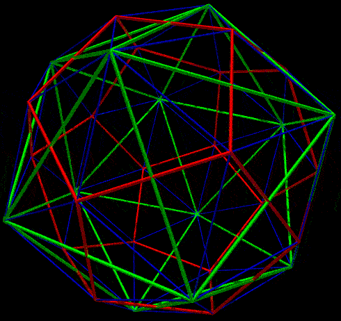
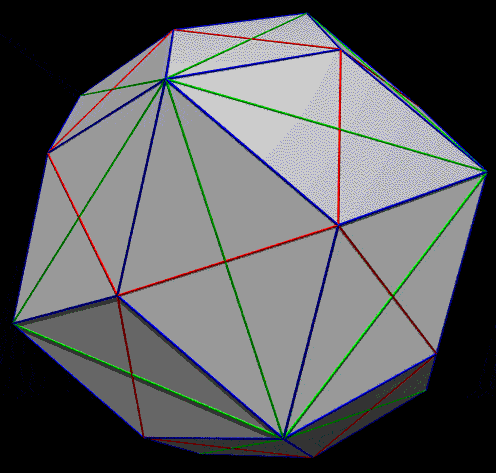

|

Miscellaneous facts
- 32 vertices, 60 edges (all the same length), 30 rhombic faces.
- The center of each rhombic face is the intersection point of
the edges of a dodecahedron and icosahedron. (See red and green line
intersections). Alternatively, the
edges of the dodecahedron and icosahedron form
the diagonals of the rhombic faces.
- The ratio of the long diagonal of the rhombic faces to the
short diagonal is the golden ratio, (1 + sqrt(5)) / 2. (Ratio
of the length of the green lines to red lines)
- The vertices are at two distances from the center, the
vertices with three connected edges are at one distance and
the vertices with 5 connecting edges are at a greater distance.

|